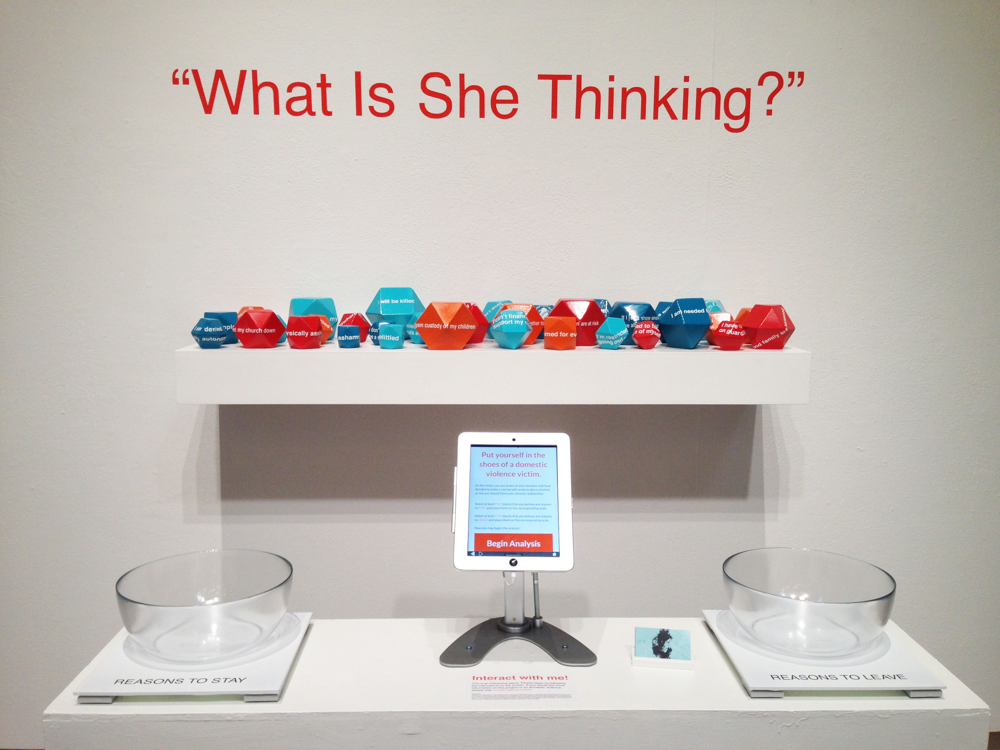

The reasons why some women would want to stay can be the same reasons why other women would want to leave.
The reasons why some women stay can be the same reasons why other women leave.
When women are deciding whether or not to leave an abusive relationship, a lot of times they must make a cost benefit analysis - and it can get very complicated. What Is She Thinking demonstrates the complexity and severity of this analysis. Not every determining factor is equal, and not every abusive relationship has the same factors at play. When women we know or love are in a domestic violence situation, as support sources, we must understand the pressure and severity of the sacrifices she makes to stay or leave.
“The decision to stay is seen as passive, naive, irrational and, where children are involved, further as irresponsible, especially by informal and general formal support sources that lack the understanding of the complex nature of domestic violence (Anderson and Saunders, 2003; Koepsell et al., 2006).”
“Unless these women are convinced that the termination of the abusive relationship will offer permanent relief from their violent experiences, the risk of retaliatory violence against them or their children often outweighs the benefits of any attempts to leave (Douglas and Walsh, 2011; Felson et al., 2002; Hart, 1993; Hirschel and Hutchinson, 2003).”
“If examined in a rational choice framework this indicates that the decision to remain in an abusive relationships is, in many cases, based on a cost–benefit analysis that goes beyond selfishness and entitlement and further considers the impact of one’s individual decisions on dependent others, for example children.”
If you want to learn more about domestic violence, or would like to help out, here are some organizations that fight for the cause!
Stop Domestic Violence - Spokanecares.org
Futures Without Violence
National Coalition Against
Domestic Violence (NCADV)
If you bleieve that you are experiencing domestic violence, please access the Domestic Violence Hotline